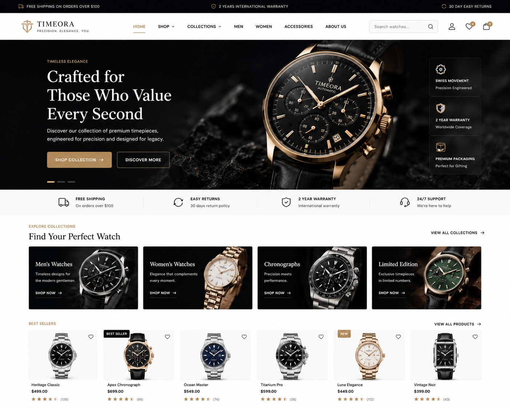
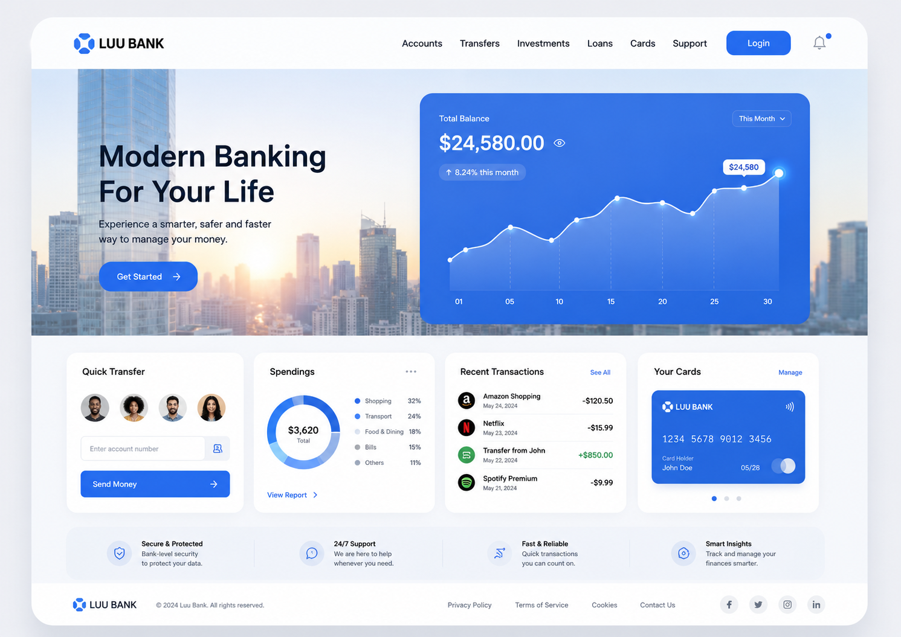
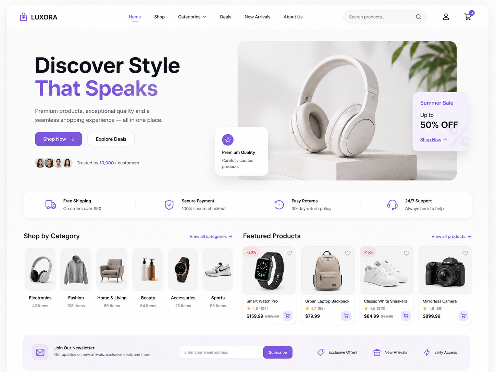
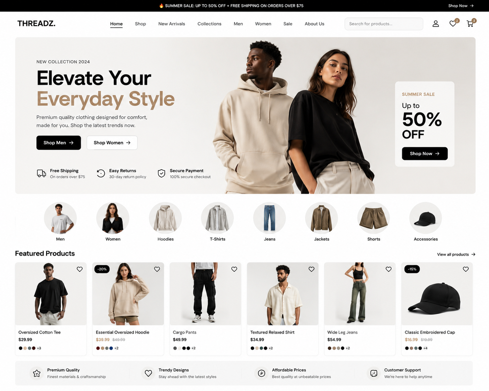
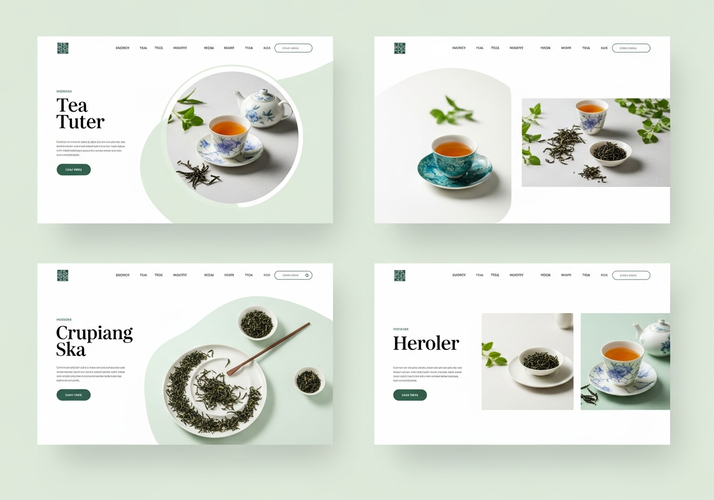
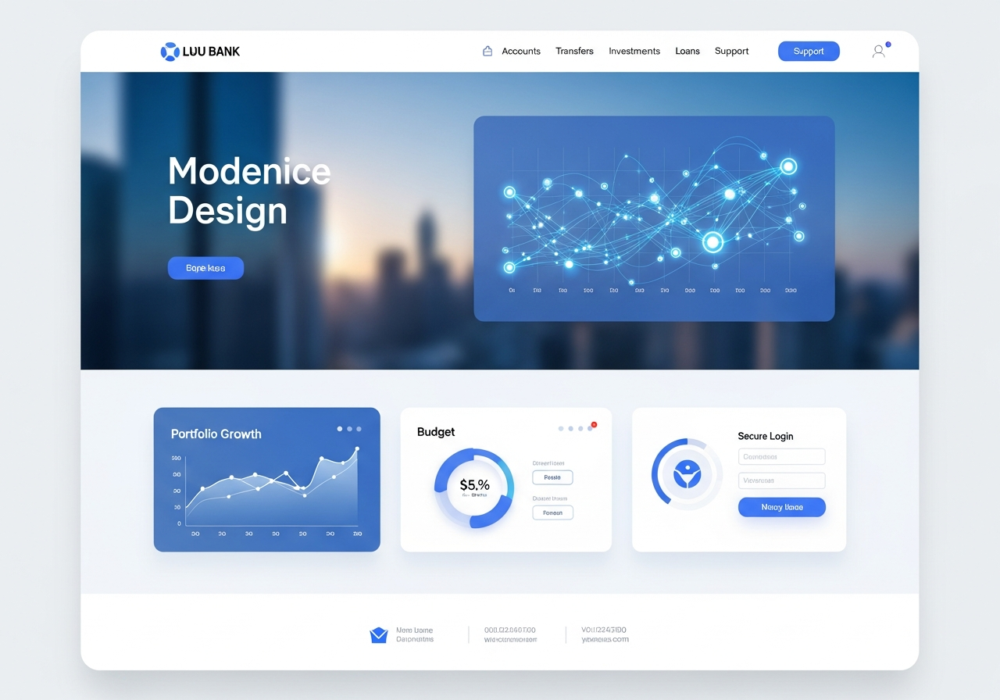
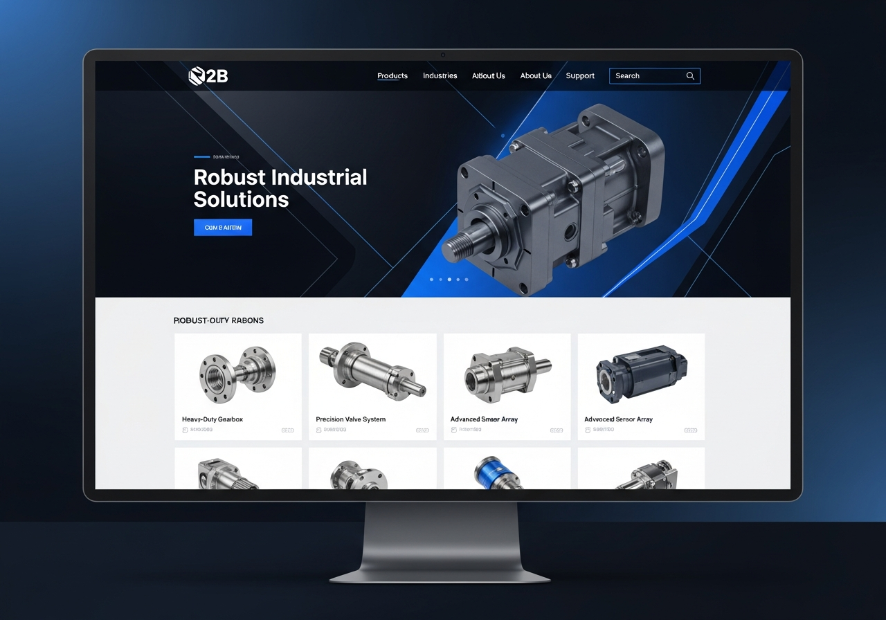
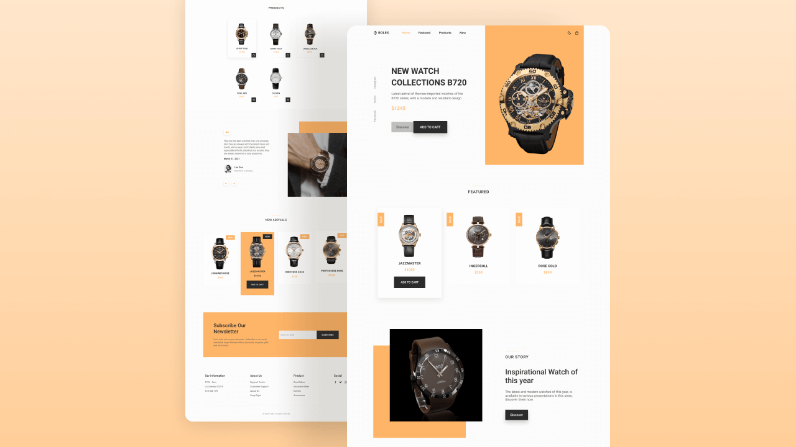

Trusted by enterprise teams and venture-backed founders.
Fast deliveryPrototypes and launch-ready platforms in 30 days.
Built for reliability99.99% uptime architecture and enterprise security.
Conversion-firstDesigned to reduce friction, increase trust, and grow revenue.
Featured work
Vivid visual stories from product launches, secure workspaces, and conversion-led experiences.
Every image reflects a premium digital interface with strong hierarchy, fast-read messaging, and polished presentation the kind of work buyers feel is built to perform.

TIMEORA – Luxury WatchesTIMEORA is a high-end horology platform focusing on timeless craftsmanship and heritage. We engineered a digital showroom that mirrors the precision and legacy of their luxury timepieces.

LUU BANK – Modern BankingLUU BANK provides next-generation financial systems for smarter, safer, and faster money management. We delivered a secure core banking interface built for high-trust user interactions.

LUXORA – Lifestyle E-CommerceLUXORA is a premium e-commerce destination for curated lifestyle products. The platform features a seamless shopping experience optimized for high conversion and frictionless checkout.

THREADZ – Fashion StoreTHREADZ is a fast-growth fashion marketplace focusing on everyday style and comfort. We built a responsive, mobile-first store that simplifies discovery and accelerates the path to purchase.

Tea Brand ConceptsA premium branding and web concept for artisan tea blenders. The experience emphasizes refined lifestyle aesthetics through an elegant, content-rich storytelling approach to digital retail.

LUU BANK – Data InterfaceThe analytics wing of LUU BANK. We created a data-driven dashboard that translates complex financial metrics into actionable insights for smarter institutional decision-making.

2B Industrial Solutions2B Industrial is a leader in durable engineering and supply chain logistics. We developed a performance-built portal to manage heavy industry projects and high-scale technical specifications.

Rolex Concept – Luxury WatchesA strategic design exploration for luxury watch collections. This concept focuses on discerning collectors, utilizing a high-fidelity interface to showcase exclusivity and prestige.
Mirelle IndustriesMirelle Industries is a primary producer of premium palm oil. We built a trusted digital presence to support their global export operations and industrial supply chain transparency.
Lawrence & PartnersLawrence & Partners is a global law firm with over 130 professionals specializing in areas like antitrust, banking, capital markets, corporate law, labor, mergers & acquisitions, and tax.
What we deliver
Premium digital experiences for ambitious technology businesses.
Platform strategy
From roadmap and architecture to product-market alignment for modern B2B digital products.
Product design
Human-centered interfaces with polished motion and conversion clarity across web and mobile.
Engineering delivery
Secure, scalable builds with modern frameworks, API ecosystems, and performance-first deployment.
ICI Tech helped us launch a conversion-first product experience with enterprise-level security. Their team moved faster than expected, and the new platform is now the backbone of our sales motion.
Working with ICI Tech means never having to worry about our platform's stability. Their builds are rock-solid, and we've seen zero downtime since launch. That's true reliability.
We needed a partner who understood the importance of uptime and data integrity. ICI Tech delivered a system that just works, day in and day out. It's a huge weight off our shoulders.
Our customers rely on us 24/7, and we needed a website that could keep up. ICI Tech built a platform that's not only fast but incredibly dependable. It's been a game-changer for our brand reputation.
From day one, ICI Tech emphasized building for the long term. Their robust architecture has proven itself time and again, handling peak loads without a hitch. We trust them completely.
The peace of mind that comes with a reliable platform is invaluable. ICI Tech delivered exactly that – a stable, secure, and high-performing system that lets us focus on our business, not IT issues.
When it comes to our customer-facing portal, reliability is non-negotiable. ICI Tech understood this deeply and engineered a solution that has exceeded all our expectations for stability and performance.
Our previous website was a constant source of headaches. ICI Tech rebuilt it from the ground up, focusing on core reliability. Now, it's a seamless experience for our users, and our support tickets have plummeted.
They don't just build; they engineer for resilience. Our new SaaS platform, thanks to ICI Tech, has maintained perfect uptime even during unexpected traffic spikes. That's the kind of reliability every business needs.
Choosing ICI Tech was the best decision for our e-commerce site. The platform they delivered is incredibly stable, handles transactions flawlessly, and gives us confidence during busy sales periods. Truly reliable partners.
The team at ICI Tech built our internal tools with such attention to detail and robustness. Our daily operations now run smoother than ever, thanks to their reliable and well-engineered solutions.
ICI Tech helped us launch a conversion-first product experience with enterprise-level security. Their team moved faster than expected, and the new platform is now the backbone of our sales motion.
Working with ICI Tech means never having to worry about our platform's stability. Their builds are rock-solid, and we've seen zero downtime since launch. That's true reliability.
We needed a partner who understood the importance of uptime and data integrity. ICI Tech delivered a system that just works, day in and day out. It's a huge weight off our shoulders.
Our customers rely on us 24/7, and we needed a website that could keep up. ICI Tech built a platform that's not only fast but incredibly dependable. It's been a game-changer for our brand reputation.
From day one, ICI Tech emphasized building for the long term. Their robust architecture has proven itself time and again, handling peak loads without a hitch. We trust them completely.
The peace of mind that comes with a reliable platform is invaluable. ICI Tech delivered exactly that – a stable, secure, and high-performing system that lets us focus on our business, not IT issues.
When it comes to our customer-facing portal, reliability is non-negotiable. ICI Tech understood this deeply and engineered a solution that has exceeded all our expectations for stability and performance.
Our previous website was a constant source of headaches. ICI Tech rebuilt it from the ground up, focusing on core reliability. Now, it's a seamless experience for our users, and our support tickets have plummeted.
They don't just build; they engineer for resilience. Our new SaaS platform, thanks to ICI Tech, has maintained perfect uptime even during unexpected traffic spikes. That's the kind of reliability every business needs.
Choosing ICI Tech was the best decision for our e-commerce site. The platform they delivered is incredibly stable, handles transactions flawlessly, and gives us confidence during busy sales periods. Truly reliable partners.
The team at ICI Tech built our internal tools with such attention to detail and robustness. Our daily operations now run smoother than ever, thanks to their reliable and well-engineered solutions.
Why we win
We make complex digital journeys feel effortless for enterprise buyers.
Our work blends modern product strategy, polished interface design, and robust engineering so your platform performs under pressure and builds trust with every visit.
Strategic product alignmentWe shape your platform around customer behavior and revenue goals.
Scalable architectureModern stacks built for secure growth, observability, and long-term maintenance.
Conversion clarityUX that communicates value quickly and guides high-intent decision-makers.